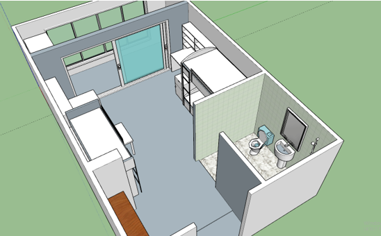
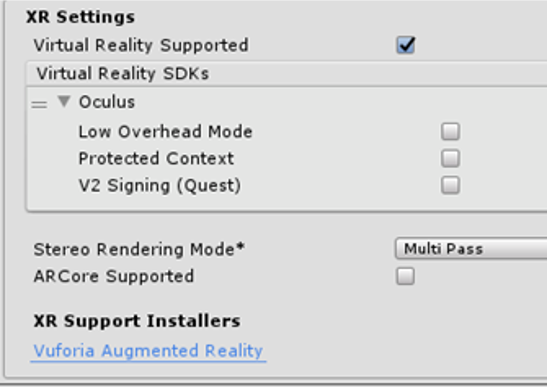
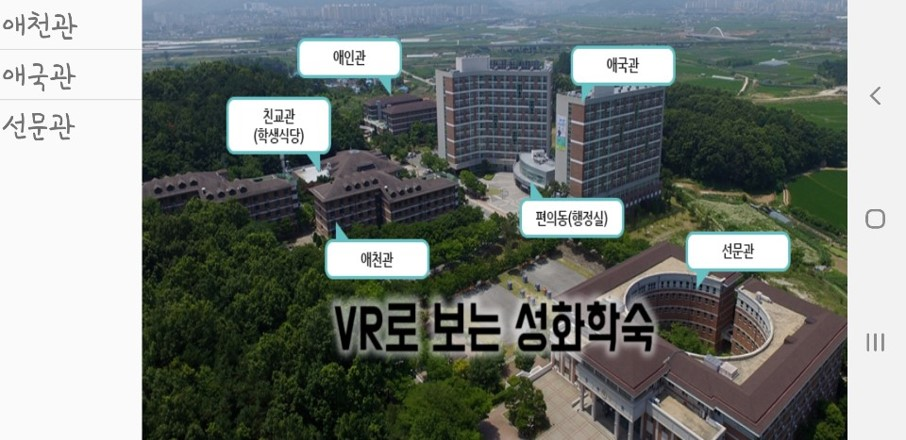

VR로 둘러보는 기숙사
Dormitory visit system using VR
1. 소개
- 선문대학교 기숙사 정보를 알 수 있는 방법은 홈페이지 뿐이지만 그 마저도 자세한 정보를 얻기에 힘든 면이 있음
- 단순히 360도 사진을 둘러보는 것이 아닌 실제와 유사한 환경을 사용자가 VR환경에서 움직임을 통해 조금 더 현실적인 기숙사 이용 경험 제공
- 단순히 360도 사진을 둘러보는 것이 아닌 실제와 유사한 환경을 사용자가 VR환경에서 움직임을 통해 조금 더 현실적인 기숙사 이용 경험 제공
2. 관련연구
- 2차원의 사진은 단면적인 모습만 보이기에 실제와 동일한지 확인 불가능
- 혼란을 야기하지 않고 잘못된 정보습득 방지
- 360도 카메라를 이용해 VR 서비스 제공하는 점은 기숙사 VR 시스템과 차이가 있음

유사 모델
3. 제안모델

- Gear VR
- VR Header는 스마트폰과 C-type USB 단자로 연결되며 사용자가 VR 환경을 볼 수 있게 함
- VR Remote Controller는 VR 환경상에서 클릭 등의 상호작용가능
- Unity Virtual Player Device
- VR환경이 실행되는 본체
- VR환경을 실행시켜주는 Oculus Application, Unity Application
- Gyroscope Sensor를 통해 VR 헤드 트래킹 기능 수행
4. 설계 및 구현

- 스케치업
- 기숙사 모델링
- 실제 환경과 비슷한 환경을 구현하기 위해 프로그램 내에서 제공되는 사람 모델을 기준으로 하여 실제 크기와 비슷하게 구현
- 기숙사의 2,3,4인실 구현

- 유니티
- 스케치업과 연동
- 각 호실 파일을 불러와 연동
- 재질 설정
- 벽지와 책상 등 재질을 설정하여 물체의 질감 표현
- 캐릭터 설정
- 캐릭터 이동 스크립트
- 콜리더 적용
- 시점 변환

- UI
- UI 시작화면
- 기숙사의 전체적인 모습 출력
- START 버튼을 통해 선택화면 전환
- 기숙사 리스트 출력
- 기숙사 선택 시 호실 목록과 사진 출력
- 사진모드와 VR모드로 구분
- VR버튼 클릭 시 해당 호실 VR환경 실행
5. 결과
- 기숙사 시각정보 제공
- 간단한 UI
- 간단한 조작법으로 접근성이 높음
- 사진모드와 VR모드로 나눠 편의성 구축
- 교내 홈페이지보다 정확하고 확실한 시각 정보 제공
- 검색 시간 감소 및 잘못된 정보 습득 방지
6. 시연영상